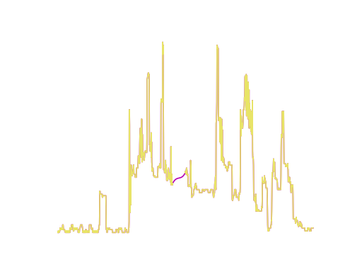
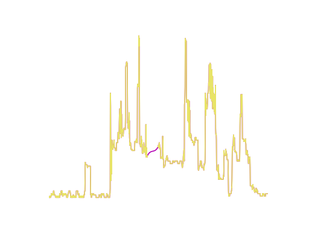

Pre-processing#
A common operation on time series is to pre-processes each series individually,
e.g., normalizing each timestep or truncating multivariate time series to have
uniform length, the preprocess-module implements a selection of
common operations that are performed along the time dimension (i.e., along the
last dimension of the time series array). Currently, Wildboar supports the
following operations:
standardizeandTruncateStandardize each time step to have zero mean and unit variance.
minmax_scaleandMinMaxScaleNormalize each time step in a predefined range, by default between 0 and 1.
maxabs_scaleandMaxAbsScaleScale each time step by the maximum absolute value,
truncateandTruncateTruncate each time series to have uniform length, i.e., to the length of the shortest time series.
interpolateandInterpolateinterpolate missing values using the specified method. Supported methods are: “linear”, “cubic”, and “pchip”. If
scipyversion 1.14 or above is installed, interpolate also supports “akima” and “makima”.
In contrast to feature-wise preprocessing, the preprocessing operations in the
wildboar.datasets-module operate sample-wise and are state-less, i.e., we can
reuse them for both the training and testing parts of our data. To simplify the
application of preprocessing, the wildboar.datasets.load_dataset function
accepts a preprocess parameter:
from wildboar.datasets import load_dataset
from wildboar.datasets import preprocess
x, y = load_dataset("GunPoint", preprocess=preprocess.minmax_scale)
The preprocess parameters accept both a function that expects a
ndarray and returns a new preprocessed ndarray or a named preprocessor
as a string. The names are the same as the function names enumerated above. For
example, the previous code snippet could be rewritten as:
x, y = load_dataset("GunPoint", preprocess="minmax_scale")
x_orig, _ = load_dataset("GunPoint")
plt.plot(x[0], label="minmax")
plt.plot(x_orig[0], label="original")


Note
The following named preprocessing functions are supported:
standardize or normalize
minmax_scale
maxabs_scale
truncate
interpolate
interpolate-cubic
interpolate-pchip
interpolate-akima (if
scipyversion 1.14 or above)interpolate-makima (if
scipyversion 1.14 or above)downsample: reduce the number of time steps to
sqrt(n_timestep)downsample-25: reduce the number of time steps to 25%
downsample-50: reduce the number of time steps to 50%
We can also provide multiple preprocessing directives as a list:
X, y = load_dataset("GunPoint", preprocess=["downsample-25", "standardize"])
X.shape
(200, 38)
A crude way of dealing with time series of unequal length is to truncate longer
time series to the length of the shortest time series. In Wildboar, we can use
truncate to accomplish this.
In Wildboar, all time series datasets are traditional Numpy-arrays with a
specified shape, i.e., (n_samples, n_dims, n_timesteps). To support time
series of unequal length, we use a specific value to denote end-of-sequence
(EOS). We can get the EOS value from wildboar.eos, and use
wildboar.utils.variable_len.is_end_of_series to check for this value,
and get the length of each series:
from wildboar.utils.variable_len import is_end_of_series
is_end_of_series(x).argmax(axis=-1)
array([0, 0, 0, ..., 0, 0, 0], shape=(200,))
For example, we could use the following code to plot the length of each dimension of a multivariate time series:
import matplotlib.pyplot as plt
x, y = load_dataset("SpokenArabicDigits", repository="wildboar/ucrmts")
x = x[:25, :3]
eos = is_end_of_series(x).argmax(axis=-1)
fig, ax = plt.subplots(nrows=x.shape[1])
for dim in range(eos.shape[1]):
eos[eos[:, dim] == 0] = x.shape[-1] # if eos == n_timestep
ax[dim].scatter(np.arange(eos.shape[0]), eos[:, dim], marker="x")
ax[dim].set_ylabel(f"dim {dim}")


Truncating the time series to the shortest dimension (in the example this is 26
time steps), using preprocess.truncate(x), results in a figure similar
to this:


Since many algorithms in Wildboar only support dimensions and samples of uniform length, we can preprocess the time series using the truncate function. One should note that truncating is very crude and result in data loss.
scikit-learn compatible transformers#
All preprocessing functions are also available as scikit-learn compatible transformers.
For example, we can create a pipeline that truncates, standardizes, and interpolate missing values.
from sklearn.pipeline import make_pipeline
from wildboar.datasets import load_dataset
from wildboar.datasets.preprocess import Truncate, Standardize, Interpolate
X, y = load_dataset("HouseholdPowerConsumption1", repository="wildboar/tsereg")
pipe = make_pipeline(
Truncate(),
Standardize(),
Interpolate(method="pchip"),
)
pipe.fit(X)
Pipeline(steps=[('truncate', Truncate()), ('standardize', Standardize()),
('interpolate', Interpolate(method='pchip'))])In a Jupyter environment, please rerun this cell to show the HTML representation or trust the notebook. On GitHub, the HTML representation is unable to render, please try loading this page with nbviewer.org.
Parameters
Parameters
Parameters
 
